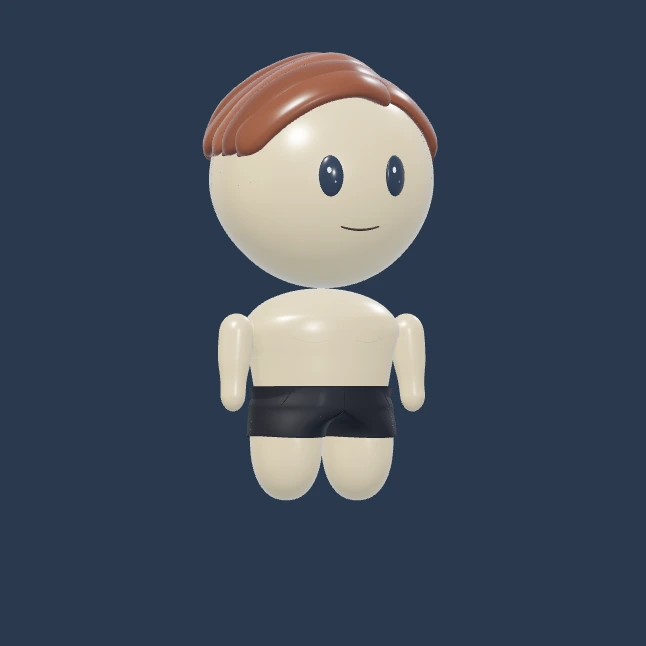
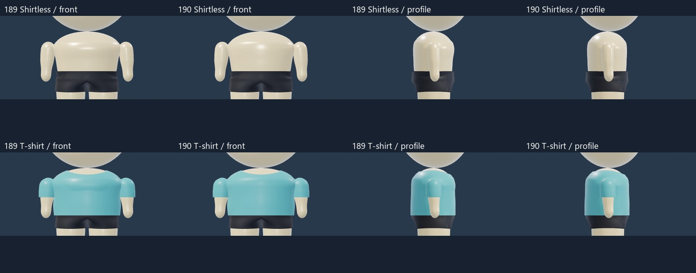
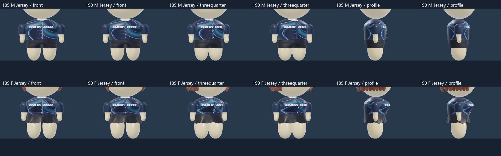
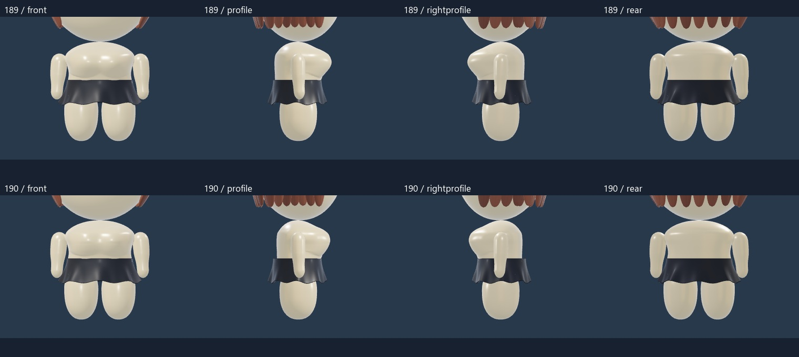
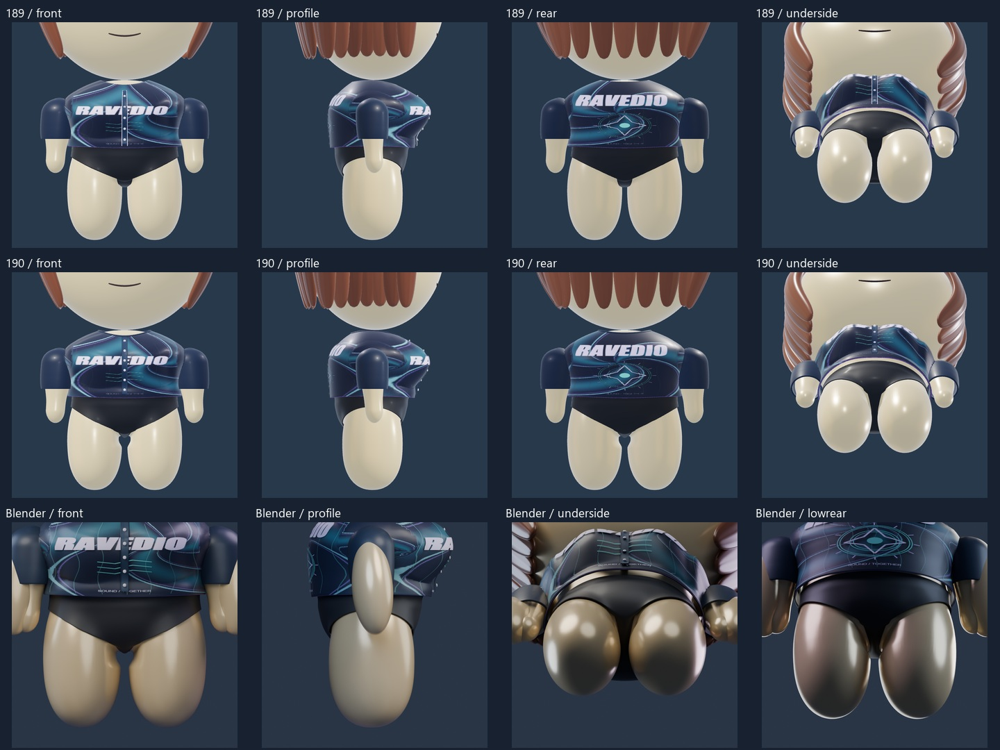
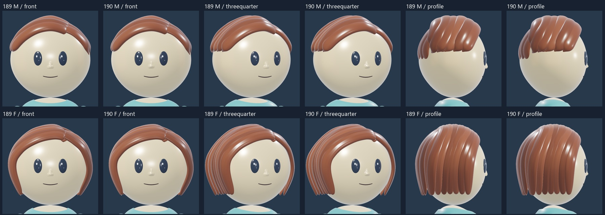
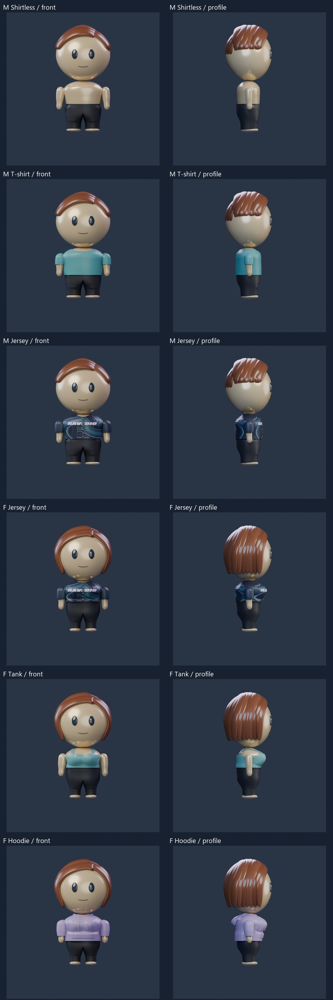
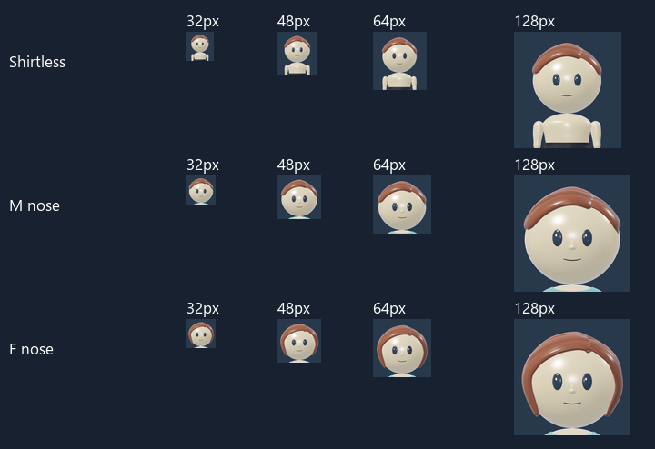

CHEST AND GARMENT REFINEMENT -190
Defined chest and cleaner garments
The men’s Shirtless chest is flat, with subtle curved definition lines. His clothed body and prior fits are restored. Both jerseys have a complete button placket and finished neckline, with a slightly deeper front opening. The women’s bust is slightly smaller with a softer underside transition, and the back-to-waist curve is smoother. Her tops retain their established designs. The bikini underside is broader and curved, and Rounded nose has a cleaner form.

Rendered top referenceLoad 3D to mix outfits, rotate and zoom. Each build remembers its selections.
Drag to rotate, pinch to zoom, or choose a fixed angle. Six men’s top choices and eight women’s tops remain available. Shirtless chest definition does not reshape the clothing. The women’s rounded front bust shape is retained with reduced projection. Arms, hairstyles, eyes, palette and fixed lighting are retained. Select Rounded under Nose to inspect the revised shape.
Shirtless chest and restored clothing

Jersey plackets and necklines

Women: bust and back-to-waist contour

Bikini: curved underside

Rounded nose: cleaner form

Saved Blender renders

Small portraits

Scope and review
Candidate190. Flat Shirtless torso with skin-adaptive tapered definition strokes; clothed men use the exact188 support. Men’s T-shirt, Button-up and Hoodie retain exact188 top geometry. The clean Tank is fitted to that support. Both jerseys gain continuous plackets and neck bindings. Women’s body changes are separated from garment fitting: a gradual rear-depth reduction and a small front bust reduction with a smoother lower join. Each top receives a bounded front-panel fit, while the backs, hems and sleeves retain their previous construction except for explicit jersey neck and hoodie/skirt hem clearance. Bikini has a connected shaped gusset and a bounded inner-thigh fit correction. Rounded nose has no nostril cavities or folded lower plate. Local art only; no product/profile contract changes. Technical verification and two visual passes are recorded separately from owner aesthetic acceptance.